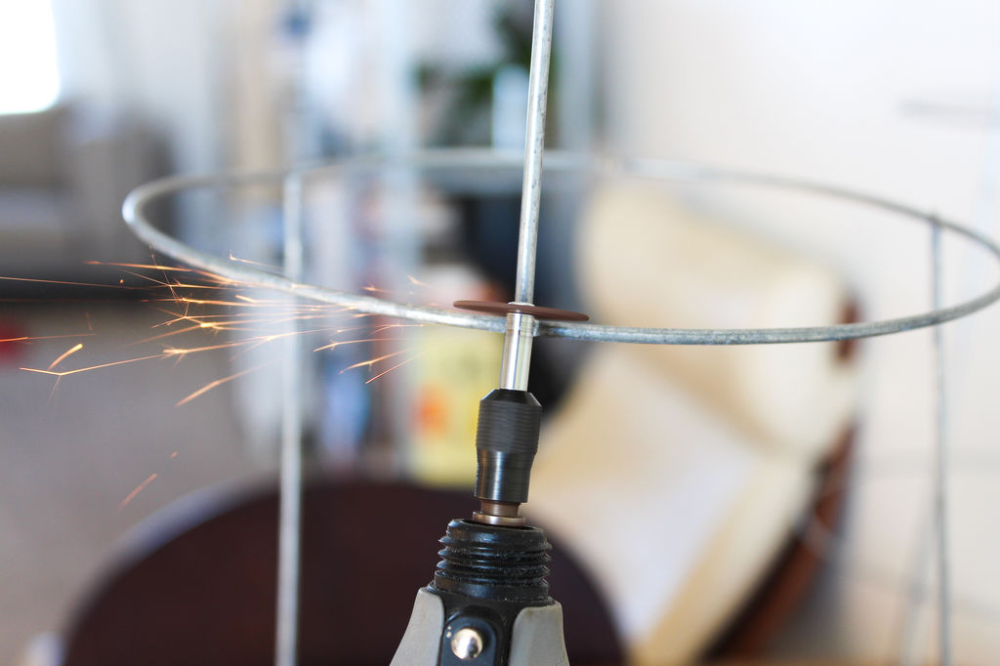
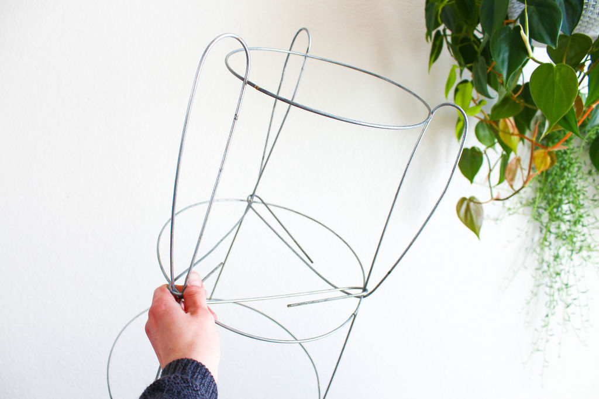

Written by: Breanna Harmer
All information, photos and video have been sourced elsewhere and are not mine. Copyright information is listed below
This is the cleanest and simplest way in my opinion. Cutting the legs off is easy with a Dremel! I made sure to use the cutting wheels to smooth out the edges of any cuts I made. I also used the cutting wheel to cut off the tiny metal pieces that were extending beyond the bottom hoop.
I found it hard to cut this gauge of wire using handheld wire cutters, so I played with bending a few tomato cages.In the end, this is what I came up with! By bending the legs down and around each other, you end up with a nice sturdy plant stand that doesn't wobble.

| Photographs and Instructions | Video |
|---|---|
| Instructables by: jessyratfink | Tomato Cage Turned Plant Stand by: Hometalk |